How to play
Single playerFirst enter your name in the box provided, then choose the skill level
and which board theme you prefer.
When the game starts you will be given the option to roll the dice to
decide who starts. You will be controlling the white checkers, while the
AI controls the red checkers.

Double playerFirst enter the white player's name, then the red player's name. Choose
an agreeable board theme and the game will start.
The first roll will decide who starts, and play continues from there
with the two players taking alternate turns at the controls.
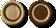
Online play
Start up GameSpy Arcade and join the Backgammon lobby. Here you will
find other players to chat with and play against.
(If you do not have GameSpy Arcade installed, you can download it from
www.gamespyarcade.com).
To start a game, click the Backgammon icon in the Games section
to join the Backgammon lobby. Then click on the "Create Game"
button and you will be taken to a second lobby, and the game will be listed
as available to other players. When someone joins your game and is ready,
press the "Launch Game" button to launch Backgammon and play.
The host will be asked to roll the dice to decide who starts.
To join a game, select an available game and click on the "Join
Game" button. You will be taken to a second lobby screen with the
host, and after you have clicked the "Ready" button, just wait
for the host launch. Once in the game you will have to wait for the host
to roll the dice to decide who starts.
When the game is finished you will be returned to the lobby and your
scores updated.
If you select the Online Play option inside the Backgammon menus, this
will launch the GameSpy Arcade program.

Controls
When it is your turn to play,
click the "Roll Dice" button and, if you are able to double, the "Double"
button will be highlighted.
First decide whether you wish
to double or not (if the option is available).
If you decide to double the opponent will be asked if they accept the
double: if they do the game will continue; if not you will win the game
at the value of the current stake.
Now roll the dice. The values
of the dice rolled will appear in place of the "Roll Dice" button.
If you roll a double an extra message will appear which indicates how
many rolls you have remaining.
The left die is taken as the default
first move, though right clicking will swap the order in which the dice
will be played. Move the mouse across the board to the point of the checker
you wish to play. Any valid moves will be indicated by markers above or
below the points as shown.
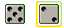
(highlight indicates the die which
will be played)
To play the move either left click,
or move to another point to see what other moves are available. Once the
first move is played the selection moves to the second die, which is
played in the same way.
Once all the dice are played,
the turn switches to the next player.
Rules of Backgammon Backgammon is played by two people on a board consisting of 24 narrow
triangles, known as points. The points alternate between light and dark
colours, and are grouped into 4 quadrants of 6 points each. The quadrant
nearest to the player and on the right is known as the player's home board,
with the other near quadrant known as the outer board.
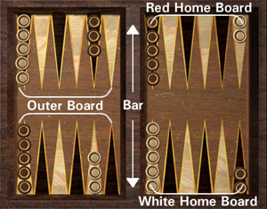
Each player has 15 checkers of their own colour. The object of the game
is to move all the checkers from the starting position onto the home board,
and then bear them off. The first player to bear off all their checkers
is the winner.
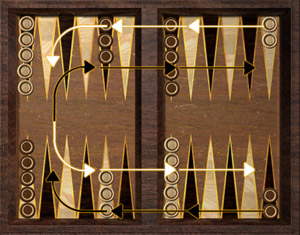
To start the game a die is rolled for each player. The player with the
higher number starts, and moves using the values on the dice just rolled.
After this the players roll a pair of dice in alternate turns.
The roll of the dice indicate how many points, or pips, the player can
move their checkers. The checkers are always moved anticlockwise around
the board, to a point nearer the player's home board.
Movement: 1. A checker can only be moved to an open point. This is a point that
is not occupied by 2 or more opposition checkers.
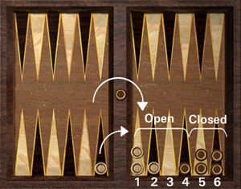
2. The numbers on the 2 dice constitute separate moves, and can be played
in any order.
3. If a player rolls a double they play the numbers shown on the dice
twice. For example a player rolling double 3 would make 4 moves of 3 pips.
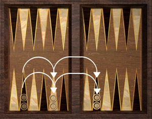
4. A player must play both numbers of a roll if legally possible (or
all 4 if they roll a double). If only one number can be played they must
play that number. If either number can be played, but not both, the highest
number must be played. When neither number can be played the player loses
their turn.
Hitting and entering A point with only a single checker on of either colour is known as a
blot. If an opposing checker lands on a blot, the blot is hit and is moved
to the bar.
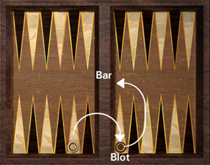
If a player has checkers on the bar they must enter them onto the opposition
home board. A checker is entered by moving it to an open point corresponding
to one of the numbers on the dice.
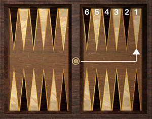
If a player is unable to enter their checkers they forfeit their turn.
If they can enter some but not all, they must enter as many as they can,
then forfeit the rest of their turn.
After a player has entered their last checker from the bar, any unused
numbers on the dice must be played (as a normal move).
Bearing off Once a player has all their checkers on their home board they can start
bearing off their checkers. A player bears off by taking a checker on
a point corresponding to a number on the dice, and removing it from the
board.
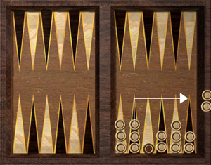
If there is no checker on a point indicated by the roll, the player
must make a legal move using a checker on a higher point. If there are
no checkers on higher points the player must remove a checker from the
highest point with their checkers on.
A player does not have to bear off if they can make a normal legal move.
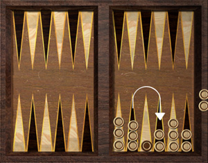
All a player's active checkers must be in their home board to be allowed
to bear off.
The first player to bear off all their pieces wins the game.
Gammons and backgammons: When a player wins the game, if their opponent hasn't managed to bear
off any of their checkers, the player wins a gammon and gets double points
for the win. If the opponent also has a piece still on the player's home
board or on the bar, the player wins a backgammon worth triple points.
Doubling cube:
NOTE! The doubling cube feature is only available in two player or
network games. You cannot use it in a single player game against the
computer.
Each game starts with a value of one point. At any point in the game
a player can choose to bring the doubling cube into play to double the
stakes of the game. They may only do this at the start of their turn before
they have rolled the dice.
When a double is made the opponent may choose to accept or refuse the
double. If they refuse they lose the game at the game value before the
double. If they accept the double, the game value is doubled and they
gain ownership of the doubling cube and only they may make the next double.
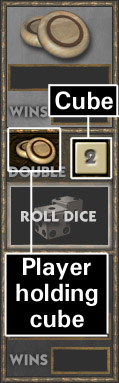
|